Research
Modeling human attention for deep imitation learning
Time: Jul. 2017 - Present
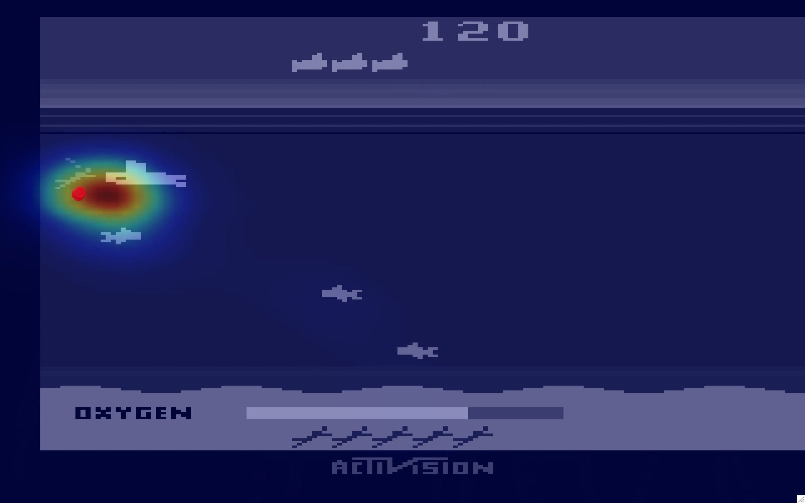
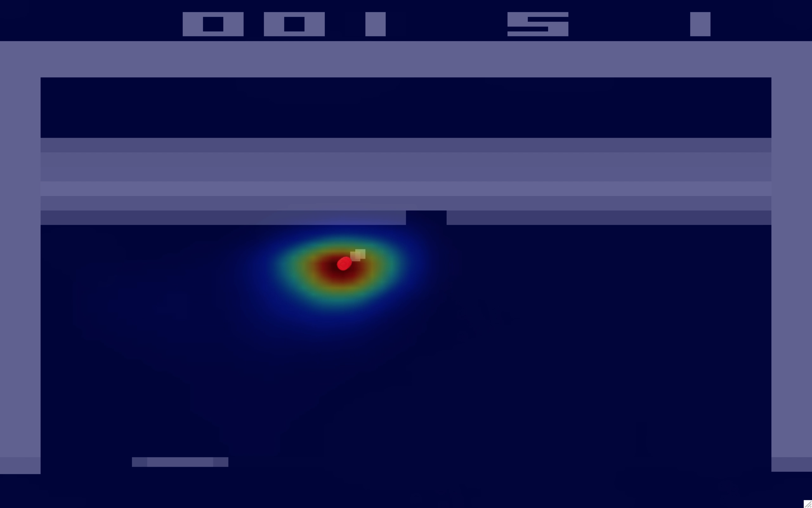
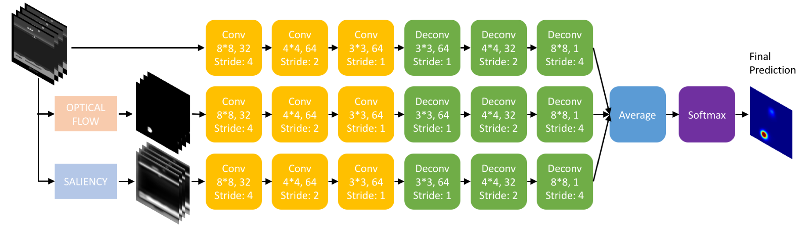
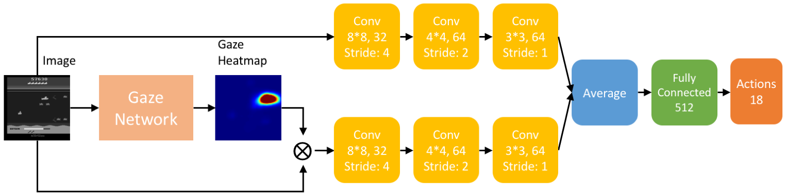
When an intelligent agent learns to imitate human visuomotor behaviors, it may benefit from knowing where the human is allocating visual attention, which can be inferred from their gaze. A wealth of information regarding intelligent decision making is conveyed by human gaze allocation; hence, exploiting such information has the potential to improve the agent's performance. With this motivation, we collect high-quality human action and gaze data while playing Atari games in a carefully controlled experimental setting. Using these data, we first train a deep neural network that can predict human gaze positions and visual attention with high accuracy (the gaze network) and then train another deep neural network to predict human actions (the policy network). Including the gaze predictions from the gaze network in the policy network significantly improves the action prediction accuracy. We conclude that it is feasible to learn human attention in the given visuomotor tasks, and that combining the learned attention model with imitation learning yields promising results.
My work was to model visual attention from human eye movement data using a deep learning approach. I helped conduct psychophysical experiments that collect high-precision human eye tracking data when playing video games, and designed a three-channel convolution-deconvolution deep neural network, that simultaneously takes game image frames, motion information (optical flow), and image saliency information to predict where the human would allocate visual attention when playing the game. Eventually I obtained a deep neural network model that can predict human visual attention with high precision. Now we are experimenting on using this visual attention model to facilitate the learning process of deep reinforcement learning and deep imitation learning algorithms.
Text effects transfer
Time: Mar. 2017 - Jun. 2017
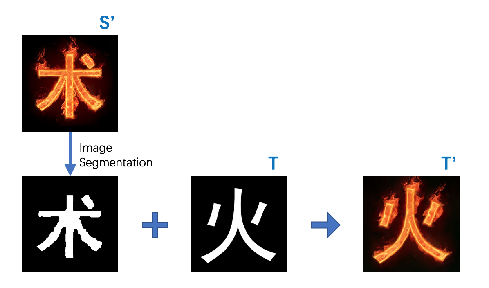
Text effects transfer is a pretty novel research area. We studied the problem of transferring the text styles from source text image to target text image, that is, given a source stylized image S' and the target text image T, then automatically generates the target stylized image T' with the special e ects as in S'. I tried different image segmentation methods to create a text mask for the stylized image S', like KNN clustering based on pixels' feature vectors and level set segmentation based on shape priors.
Cultural heritage protection based on virtual reality
Time: Mar. 2016 - Jun. 2016
I participated in an interdisciplinary project between computer vision and archaeological conservation, in which we attempted to repair the faces of the Buddha of Longmen Grottoes using archived photos and display them on a virtual reality (VR) system. I was responsible for designing the VR user interface based on gesture recognition to enable the visitors to instruct the system to display the images, show text descriptions, or start the voice guide. I used Hidden Markov Model to implement a three-class gesture recognition, achieving an accuracy of 96% which met the requirements of the project.
Projects
Static and Dynamic Gesture Recognition
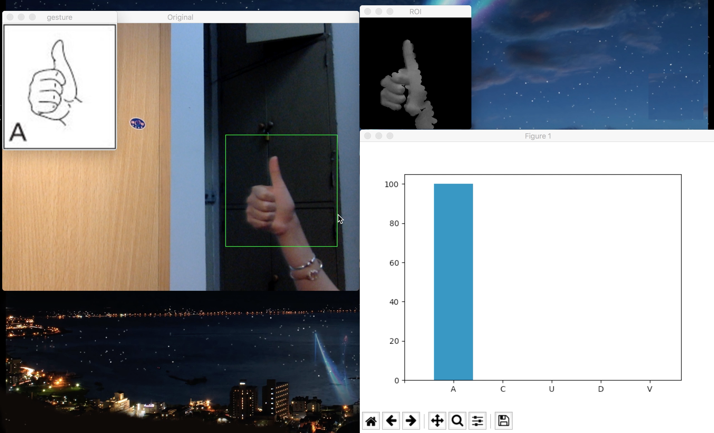
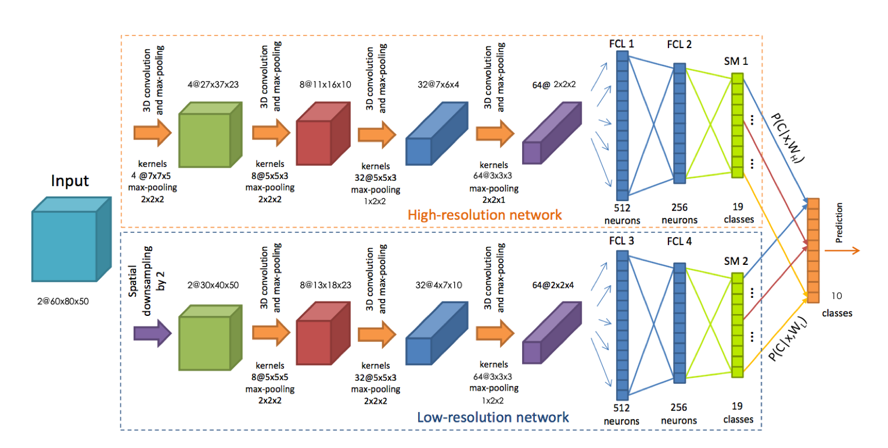
We implemented static gesture recognition using a convolutional neural network, obtained an accuracy of 90% on Sebastien Marcel Static Hand Posture Database (6 categories). We also extended to use this gesture recognition model to control the Dino Jump game.
We also implemented dynamic gesture recognition using a two-stream 3D convolutional neural network, obtained an accuracy of 91% on Sheffield KInect Gesture (SKIG) Dataset (10 categories).
Text and Image Classification
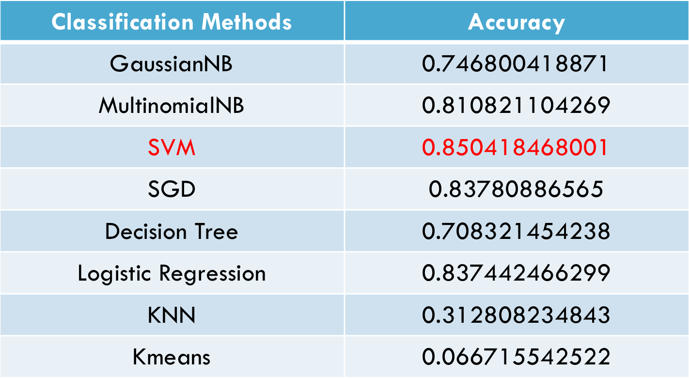
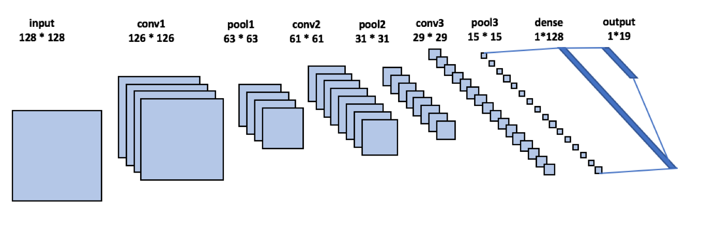
We implemented text classification using scikit-learn. Compared the performance of different classifiers (Naive Bayesian, SVM, SGD, Decision Tree, KNN, K-means), achieved 85% accuracy (9 categories).
We also implemented images classification using Keras on a subset of ImageNet, achieved 80% accuracy (19 categories). We designed a CNN which consists of 3 convolutional layers followed by pooling layers and one fully connected layer.
[Source Code]
Face Detection and Recognition
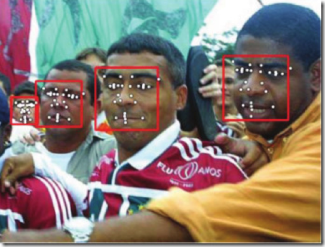
In this project, we detected faces in given images, matched the faces to examples in a given photo gallery and identified the person. Face detection and alignment processes are implemented in Dlib. Face recognition uses a deep learning model that is fine-tuned from Deeply learned face representations are sparse, selective, and robust (DeepID2+).
Visualizing the Bank Marketing Data Set
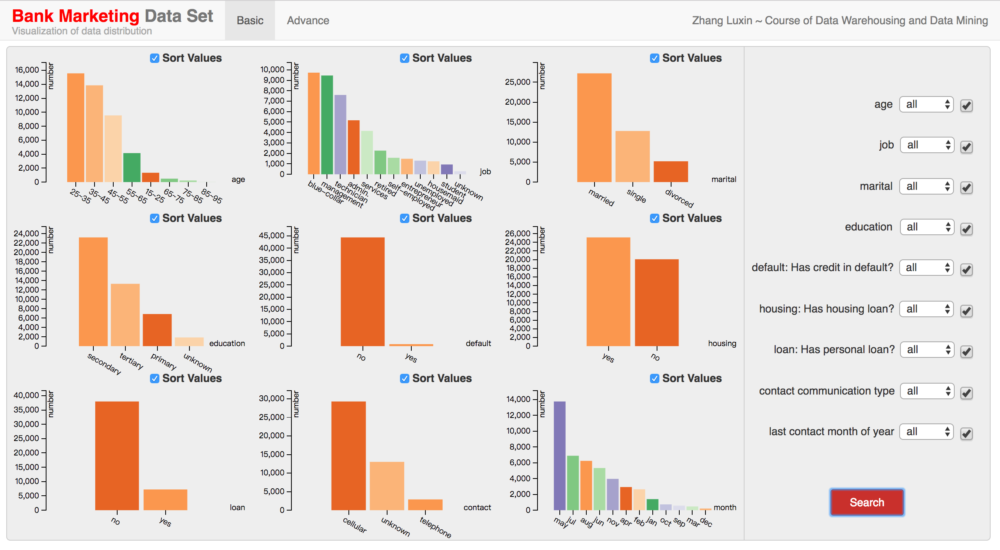
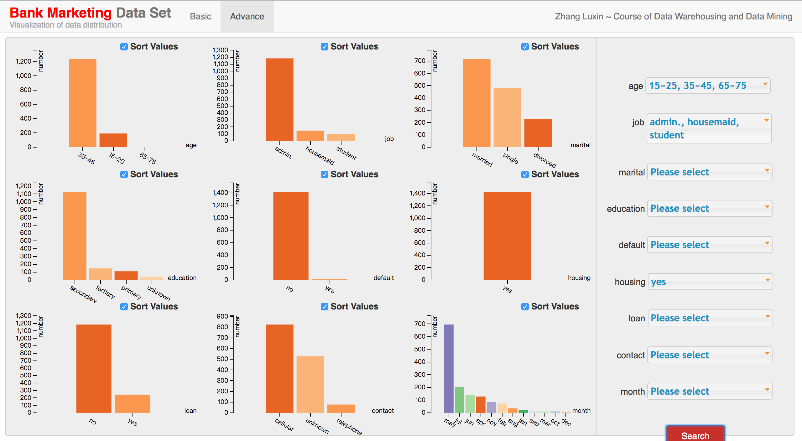
In this project, I developed a client, server and database system to visualize the Bank Marketing Data Set, with an interactive interface that allows users to customize the visualization.
[Source Code]
Design and Control Robots In Simulation

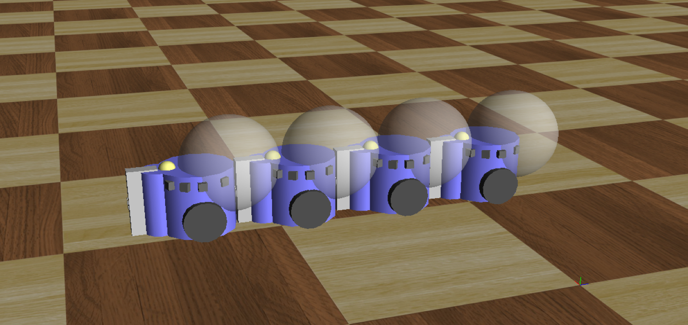
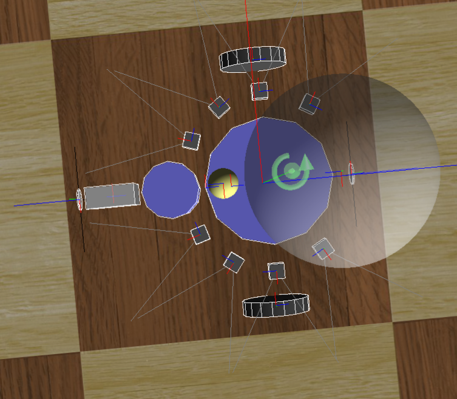
In this project, we designed a multi-robot system on Webots where a team of robots are instructed to perform a set of navigation and interaction tasks.
[Source Code]
Blend Pictures Seamlessly with Poisson Image Editing
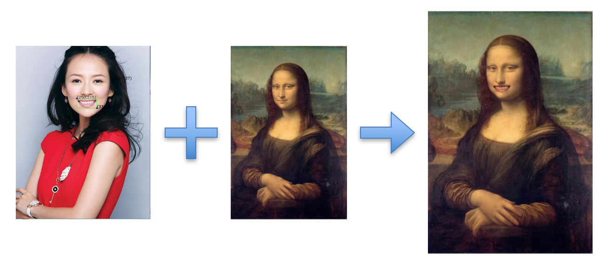
We learnt the paper of Poisson Image Editing and the source code of the exiting function in OpenCV, then implemented the algorithm using C++ and OpenCV in Visual Studio.
Mine Sweeper

We designed the game Mine Sweeper using C++. In our implementation, we provided time counting in game, saving and loading at any time on your turn, including 3-level difficulty with different board size. We also wrote a simple graphical user interface with EasyX.